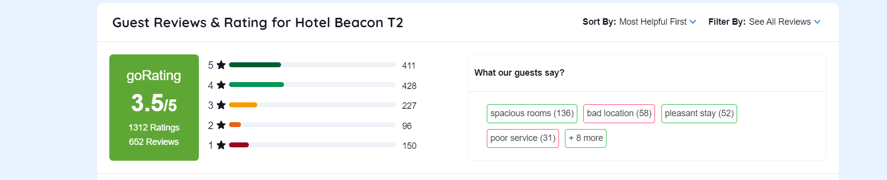
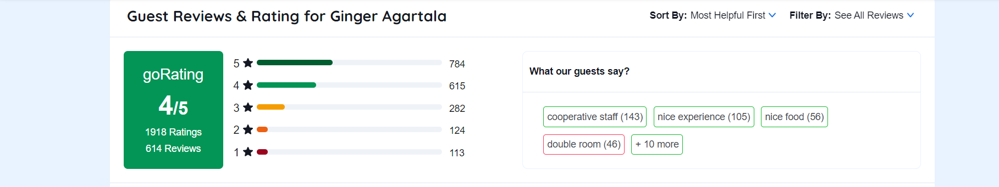

RATINGS

Hotel The Royal Plaza is a good choice for travellers looking for a 4
star hotel in Delhi. It is located in Connaught Place. Hotel is rated
3.0 out of 5, which is considered as average. Some of the popular
transit points from Hotel The Royal Plaza are Janpath Metro Station
(760 mtrs), Akshardham Temple (8.7 kms) and T1 - Delhi Airport (IGI
Airport) (13.5 kms). The Hotel is in proximity to some popular tourist
attractions and other places of interest in Delhi. Some of the tourist
attractions near Hotel The Royal Plaza Embassy Of Nepal (2.2 kms),
Lakshmi Narayan Temple Delhi (3.1 kms), Old Fort (3.6 kms), Firoz Shah
Kotla Cricket Stadium (4.6 kms), High Commission Of Sri Lanka (4.8
kms), Red Fort (5.6 kms) and Shri Digambar Jain Lal Mandir (5.7 kms).
From all the 4 Star hotels in Delhi, Hotel The Royal Plaza is very
much popular among the tourists. A smooth check-in/check-out process,
flexible policies and friendly management garner great customer
satisfaction for this property. The Hotel has standard Check-In time
as 02:00 PM and Check-Out time as 12:00 PM. It is a couple-friendly
property, hence it is absolutely safe for unmarried couples to stay
here.

HOTEL LEAFIO MARIGOLD is a good choice for travellers looking for a 3
star hotel in Mumbai. It is located in Near Mumbai Airport.This Hotel
stands out as one of the highly recommended hotel in Mumbai and is
recommended by 87% of our guests. Hotel is rated 3.8 out of 5, which
is considered as good. The property enjoys a great location advantage
and provides easy and fast connectivity to the major transit points of
the city. Some of the popular transit points from HOTEL LEAFIO
MARIGOLD are Marol Metro (520 mtrs), Ajmera Marol Naka (820 mtrs) and
Airport Road (830 mtrs). The Hotel is in proximity to some popular
tourist attractions and other places of interest in Mumbai. Some of
the tourist attractions near HOTEL LEAFIO MARIGOLD St. John the
Evangelist Church (460 mtrs), Marol Naka (1.4 kms), Siddhivinayak
Temple (15.7 kms), ISKCON Mandir Sri Sri Radhagiridhari Mandir (17.6
kms), Korum Mall (18.6 kms) and Kopineshwar Temple (18.8 kms). From
all the 3 Star hotels in Mumbai, HOTEL LEAFIO MARIGOLD is very much
popular among the tourists. A smooth check-in/check-out process,
flexible policies and friendly management garner great customer
satisfaction for this property. The Hotel has standard Check-In time
as 02:00 PM and Check-Out time as 12:00 PM. It is a couple-friendly
property, hence it is absolutely safe for unmarried couples to stay
here.

81% of the guests have recommended Hotel Beacon T2 on our platform.
Good rooms and good stay experience are some highly appreciated and
talked about aspects of the Hotel Beacon T2. With an overall rating of
3.5 out of 5 (1312 Ratings), the property is rated very good by 31% of
the guests, 32% have rated it good, 17% have rated it average and 20%
have rated it as bad. Also, we recommend that guests must go through
traveller reviews and ratings posted by fellow travellers on the
Goibibo platform to ensure that Hotel Beacon T2 is best suited for
them. For more detailed information about this hotel, you can check
the Questions & Answers section as well on Goibibo. There you can find
the answers of the questions asked by some of our users about this
property. In terms of Location 24% people like the location of Hotel
Beacon T2. Safety And Hygiene is the top priority for the Hotel Beacon
T2 with score 37%. 31% Guests like the Thermal Screening feature.
Staff Hygiene feature is liked by 21% users. Social Distancing is also
followed by the staff of Hotel Beacon T2 the score for this feature is
32%. Overall Food of Hotel Beacon T2 is liked by the 36% guests. Hotel
Beacon T2 Amenities are liked by the 63% of guest. Restaurant is liked
by the 70% guests. 52% guest said Wi-Fi of Hotel Beacon T2 was good.
The Hotel Beacon T2 also provide parking to their guest. Overall score
for the parking amenity is 61%. Also 92% guest said that Television
was working in their rooms. You can find numerous hotels in Mumbai
under different categories and Hotel Beacon T2 is one the best hotel
under its category.

Ginger Pune, Wakad is a good choice for travellers looking for a 3
star hotel in Pune. It is located in Pimpri-Chinchwad. Hotel is rated
3.7 out of 5, which is considered as good. Some of the popular transit
points from Ginger Pune, Wakad are Lavasa Bus Stand (9.4 kms), Pune
Station Bus Stand (18.4 kms) and Pune International Airport (22.9
kms). The Hotel is in proximity to some popular tourist attractions
and other places of interest in Pune. Some of the tourist attractions
near Ginger Pune, Wakad MCA Stadium (10.5 kms) and Shaniwar Wada (16.8
kms).